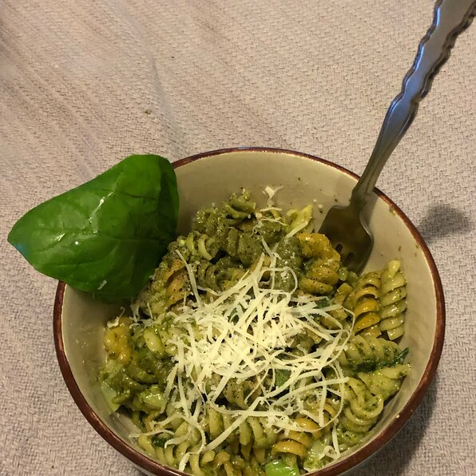

Pesto Pasta

Description
This is a quick and delicious recipe that will make you want to eat more and more!
It should only take about 15 minutes and it provides 8 servings.
Ingredients
- 1/2 cup chopped onion
- 2 1/2 tablespoons pesto
- 2 tablespoons olive oil
- 2 tablespoons grated Parmesan cheese
- 1 (16) ounce package pasta
- salt to taste
- ground black pepper to taste
Steps
- Cook pasta in a large pot of boiling water until done. Drain
- Meanwhile, heat the oil in a frying pan over medium low heat. Add pesto, onion and
salt and pepper. Cook about five minutes, or until onions are soft.
- In a large bowl, mix pesto mixture into pasta. Stir in grated cheese and serve.